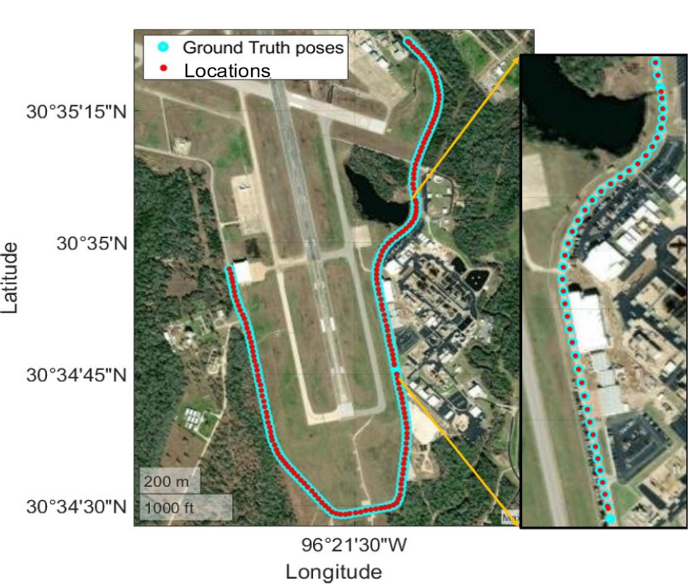
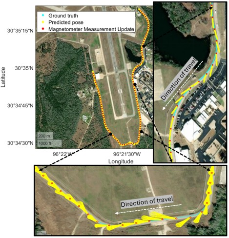

Robotics | Autonomous Navigation | Sensor Fusion
I am a PhD candidate in the Aerospace Engineering department of Texas A&M University, working with Dr. Manoranjan Majji in LASR laboratory. My research focuses on robot mapping, localization and sensor fusion for GPS denied environments. I have had professional experience in developing algorithms for autonomous cars at Magna with hands on experience on camera, LiDAR and Radar. I hold a master's degree in robotics from the University of Michigan. I will be graduating in May 2025.
This work presents a holistic parametric topological magnetic field based map representations for autonomous navigation. The work introduces characteristic maps for larger scale analysis and utlizes them for localization.

This work presents a novel approach to magnetic field aided localization with global continuous mathematical map models followed by magnetic and IMU guided localization for GPS restricted areas. The work also talks about online calibration of accelerometer using the localized poses. The work was accepeted at "IEEEE IROS, 2024"
 Magnetometer IMU
Development on custom feature extraction technique for magnetic field anomalies. The technique utilizes global fits with Legendre polynomials and extracts keypoints using Difference of Legendre (DoL) variations.
The project focused on developing online calibration techniques with localization for magnetometer in a noisy indoor environment. (Awaiting work release)
Email: msdesh@umich.com